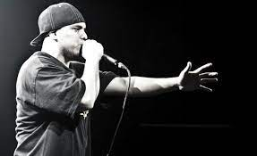

RAP
El rap es un género musical que incorpora "rima, habla rítmica y jerga apoteósica", que se interpreta en una variedad
de tipos, por lo general sobre un acompañamiento musical. Los componentes del rap incluyen "contenido" (lo que se dice),
"flow" (ritmo, rima) y "entrega" (cadencia, tono). El rap generalmente se interpreta sobre una pista instrumental, aunque
también puede realizarse a capella. El rap hace parte de la música hip-hop, pero los orígenes del fenómeno son anteriores
a la cultura hip-hop.El precursor más temprano del rap moderno es la tradición griot del oeste de África, en la cual "historiadores
orales", o "cantantes de alabanza", diseminarían tradiciones orales y genealogías, o usarían sus formidables técnicas retóricas para
cotillear o "elogiar o criticar individuos". Las tradiciones de Griot se conectan con el rap a lo largo de un linaje de reverencia verbal
negra que se remonta a las prácticas del antiguo Egipto, a través de James Brown interactuando con la multitud y la banda entre canciones.
Por lo tanto, las letras y la música de rap forman parte del "continuum retórico negro" y pretenden reutilizar elementos de tradiciones
pasadas al tiempo que se expanden por medio de "el uso creativo del lenguaje, los estilos y estrategias retóricas". La persona a la que
se considera como creador del estilo de "pronunciar rimas sobre música extensa", que se conocería como rap, fue Anthony "DJ Hollywood"
Holloway de Holly Springs, Georgia.

El rap se suele pronunciar sobre un beat, normalmente proporcionado por un DJ, un turntablista, un Beatboxer o una A capela sin acompañamiento.
Estilísticamente, el rap ocupa un área gris entre el habla, la prosa, la poesía y el canto. La palabra, que es anterior a la forma musical,
originalmente significaba "golpear ligeramente", y ahora se usa para describir el habla rápida o la réplica. La palabra había sido utilizada en
inglés británico desde el siglo XVI. Fue parte del dialecto afroamericano del inglés en la década de 1960 que significa "conversar", y muy pronto
después de eso en su uso actual como un término que denota el estilo musical. Hoy en día, el término rap está tan estrechamente asociado con el hip-hop
que muchos escritores incorrectamente usan los términos indistintamente. No se debe confundir la cultura hip-hop con el rap, cultura que engloba al rap,
dado que el hip-hop no es un movimiento musical.En el Rap Femenino Queen Latifah, Missy Elliott, Lil Kim, Lauryn Hill y Nicki Minaj son consideradas las
mujeres que dieron a conocer y abrieron las puertas a la nuevas generación, así como romper el esquema de que sólo los hombres pueden hacer rap.